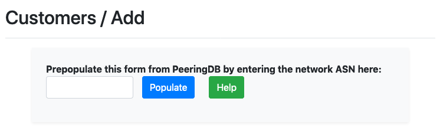
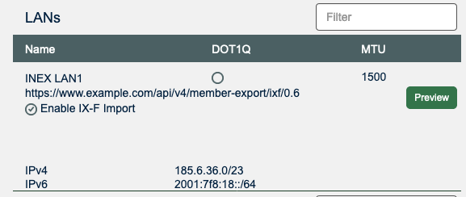
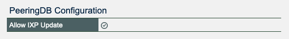
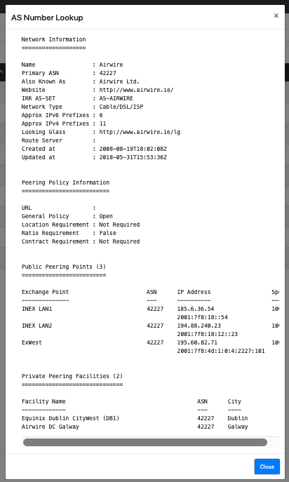

PeeringDB
PeeringDB is a freely available, user-maintained, database of networks and interconnection data. The database facilitates the global interconnection of networks at Internet Exchange Points (IXPs), data centers, and other interconnection facilities. The database is a non-profit, community-driven initiative run and promoted by volunteers. It is a public tool for the growth and good of the internet.
IXP Manager uses PeeringDB in a number of current (and planned) ways.
OAuth - User Authentication
IXP Manager can authenticate users via their PeeringDB account and affiliations. Please see this page for full details and instructions.
Population of Data When Adding Customers
Much of the information required to add new customers to IXP Manager can be prepopulated from PeeringDB by entering the customer's ASN into the box provided on the add customer page:

For maximum benefit, you should configure a user on PeeringDB for your IXP Manager installation and set these details in the .env file:
#######################################################################################
# PeeringDB Authentication
#
# PeeringDb's API is used, for example, to pre-populate new customer details. If you
# provide a working PeeringDb username/password then these will be used to get more
# complete information.
#
IXP_API_PEERING_DB_USERNAME=username
IXP_API_PEERING_DB_PASSWORD=password
Syncing IXP Owned Data to PeeringDB Customer Records
PeeringDB can take data from your IXP Manager installation via the IX-F Export schema that is part of IXP Manager. PeeringDB requires two things for this to work:
First, you need to add your IX-F Export URL to your PeeringDB IX LAN entry:

Secondly, and unfortunately, each individual network must opt in to having their data updated by this mechanism (data meaning connection to the exchange, peering IPs and port speeds). They do this via this option on their network page:

ASN Detail
In most places in IXP Manager, you can click on an ASN number. This uses PeeringDB's whois service to provide a quick view of that network's PeeringDB record.
Here's a squashed screen shot just to illustrate the feature:

Existence of PeeringDB Records
On the customer overview page from IXP Manager v5.0, we provide an indication (yes/no) as to whether a customer has a PeeringDB record. Generally it is important for IXPs to encourage their members to create PeeringDB entries to ensure your IXP is properly represented on their database.
Whether a customer has a PeeringDB entry is updated daily via the cronjobs.md. If you want to run it manually, run this Artisan command:
$ php artisan ixp-manager:update-in-peeringdb -vv
PeeringDB membership updated - before/after/missing: 92/92/17
As you'll see from the output, it will show you the results. We will provide more tooling within IXP Manager to show this information in time.
Facilities
When you add facilities (locations / points of presence / data centers) to IXP Manager, it pulls a list of known facilities from PeeringDB. You should select the correct one from the list (or add a missing one to PeeringDB) when you add/edit your facilities.

Note that this list is cached for two hours.
Infrastructures and PeeringDB IXP Entry
Similarly to adding facilities above, when you add an infrastructure (IXP) to IXP Manager, it pulls a list of known IXPs from PeeringDB. You should select the correct one from the list (or add a missing one to PeeringDB) when you add/edit your infrastructures.
Note that this list is cached for two hours.